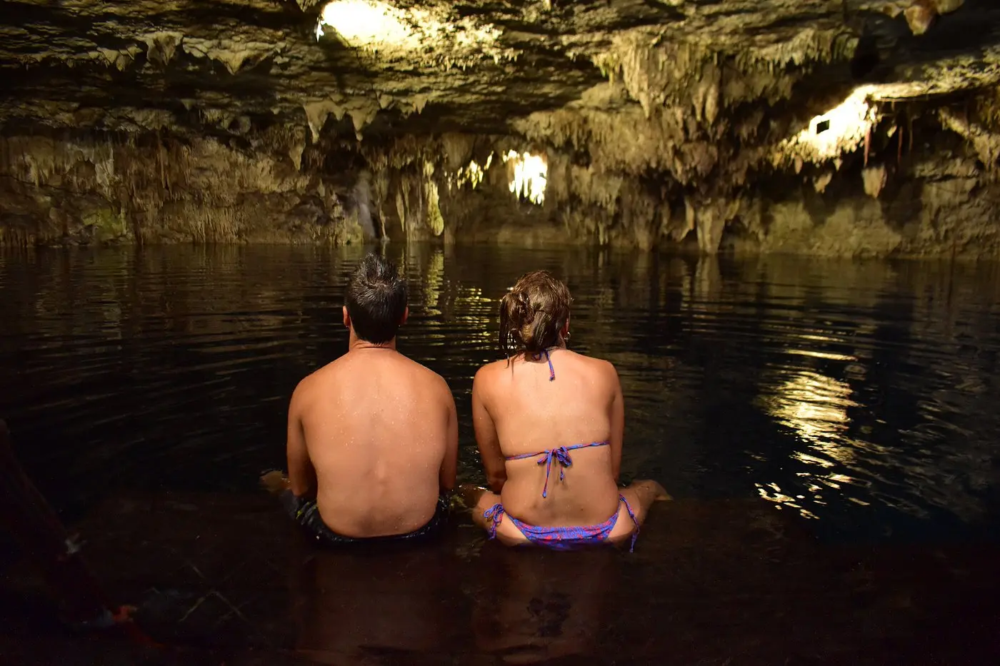

Agua
Promover prácticas de visita que reduzcan el impacto alrededor de los cenotes.
Puerto Morelos · Ruta de los Cenotes
Kin-Ha es agua antigua, roca viva y memoria compartida. Tu experiencia puede seguir creciendo en una relación más consciente con este territorio.
Una historia nacida en la selva
Antes de convertirse en un lugar de encuentro para viajeros, Kin-Ha nació del vínculo de una familia local con el agua, la roca y la selva de Puerto Morelos. Con el tiempo, ese paisaje abrió sus puertas para que más personas pudieran conocerlo con respeto.
Hoy queremos que cada visita deje algo más que una fotografía: curiosidad, gratitud y el deseo de ayudar a conservar el entorno que hizo posible la experiencia.
Agua antigua. Roca viva. Selva que permanece.

Selva Guardian
Selva Guardian es una iniciativa privada y voluntaria de Cenotes Kin-Ha para impulsar acciones concretas de cuidado del entorno. Su propósito es sencillo: acercar a visitantes y aliados a proyectos que puedan explicarse, documentarse y realizarse de manera responsable.
Nuestro enfoque
Preferimos comunicar menos y cumplir más. Cada iniciativa debe tener un destino identificable y un alcance que podamos sostener.
Promover prácticas de visita que reduzcan el impacto alrededor de los cenotes.
Priorizar especies nativas y acciones compatibles con el ecosistema local.
Documentar el destino y seguimiento disponible para cada iniciativa apoyada.
Invitar a visitantes, equipo y aliados a participar de forma informada y voluntaria.
Contribuye con propósito
Antes de recibir una contribución te informaremos el destino propuesto, el alcance de la acción y el tipo de seguimiento disponible. Nada se carga automáticamente desde esta página.
Una contribución accesible para respaldar acciones de cuidado y mantenimiento ambiental comunicadas por Kin-Ha.
Solicitar informaciónPara quienes desean acompañar una acción específica y recibir información sobre su destino y seguimiento disponible.
Solicitar informaciónConoce el alcance vigente del programa de árboles nativos, su identificación y la forma de seguimiento disponible antes de participar.
Conocer el programaTu historia continúa
Registra tu visita para recibir comunicaciones únicamente cuando las autorices, comparte una opinión auténtica y planea tu próxima experiencia directamente con Cenotes Kin-Ha.
Cupón de agradecimiento. Confirma vigencia, disponibilidad y restricciones al momento de reservar. No acumulable con otras promociones.